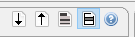

ARX displays input and output data in special tables with headers which indicate attribute types by different colors:
Each record is further associated with a checkbox. These checkboxes indicate, which records are contained in the specified research sample. The checkboxes in the view for output datasets, indicate the sample that was specified when the anonymization process was last executed. They cannot be edited. The checkboxes in the view for the input dataset represent the current research sample. They are editable.
Each table offers a few options that are accessible via buttons in the top-right corner: